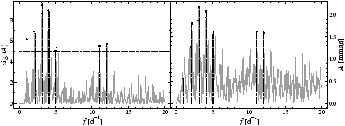

Since the prewhitening cascade performed by SIGSPEC may be extremely time consuming, the program can compute a preview. This add-on is activated by the keyword preview in the .ini file.
Whereas the significance spectra rely on the False-Alarm Probability compared to a noise dataset with the same rms error as the given time series (or series of residuals, respectively), the significance spectrum provided in the file preview.dat represents a set of identified maxima in the significance spectrum of the original time series, but based on the point-to-point scatter in the time domain rather than on the standard deviation of observables. The lower sig limit for writing a local maximum to the file preview.dat is specified as the argument to the keyword preview in the .ini file.
The calculation of the sig is based on the assumption that only the point-to-point scatter is random, and everything else contributing to the rms error represents signal that will be prewhitened in the course of the subsequent loop. The preview output is to be considered as a rough estimate for the final result obtained by step-by-step prewhitening and contains not only the intrinsic variations but also all aliases, which will not occur in the following analysis. The file preview.dat consists of four columns referring to
Example. The sample project preview contains a preview file for the V photometry of IC4996#89. In the file preview.ini, the line
preview:siglimit 5
sets the sig threshold to 5. The output file preview/preview.dat contains 11 components, sorted by frequency. The frequencies and corresponding sigs in the first two columns are
0.9945158494303480 6.1674140356166323
1.9917563998155081 6.9302735632389876
2.1388902515119841 6.7175642729893710
2.9835475482878717 8.6773027802854656
3.1361308018982843 9.4899187898938777
3.9862375005883859 8.9589776551282210
4.1333713522847031 8.7492615592402885
4.9780286490607102 5.0523760377159039
5.1360613045861099 5.3438911274207790
11.0268647743572874 5.5214237212500406
12.0241053247411784 5.6674302270769710
Fig.17 displays the significance and amplitude spectrum of the original time series. Since the preview does not employ any prewhitenings, aliases are present in the file.



Next: Correlograms
Up: SigSpec User's Manual by
Previous: MultiSine profiles
Contents
Piet Reegen
2009-09-23